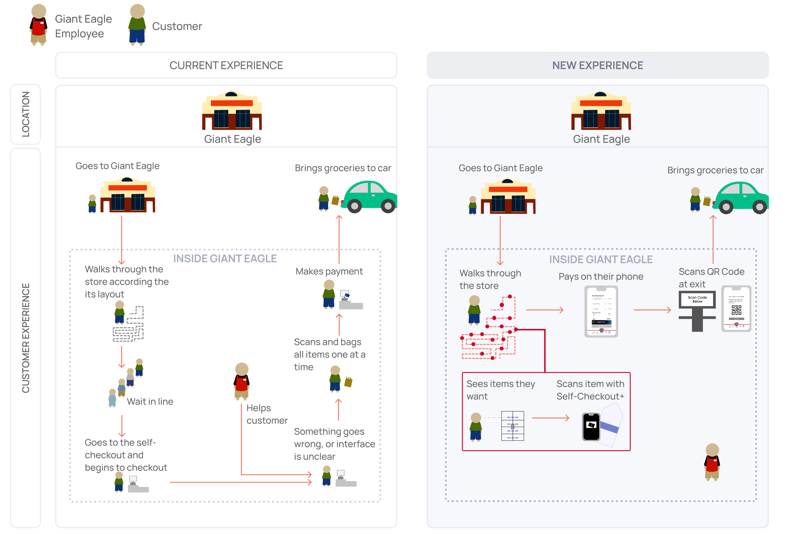

Project Background
Problem
Giant Eagle needs to better compete with competitors in response to the changes that the COVID-19 pandemic has brought upon in the grocery industry.
Insight
Customers want to spend less time inside grocery stores and minimize their contact with others. One key area that both areas touch is the self-checkout process. Interestingly, as the size and quantity of items increase, the usability of the current self-checkout system decreases.
Outcome
A mobile and tablet site for a seamless add-as-you-go system that also helps users plan their trip ahead of time
How might we make navigating the grocery store and checking out more time efficient?
One of the largest grocery store stressors for customers is the wait time. The satisfaction of customers who enjoy and don't enjoy grocery shopping are significantly impacted by their wait time. This is one area for opportunity that our team aimed to address.
Storytelling interviews
We aimed to understand how different groups of customers are currently grocery shopping. We conducted 12 storytelling interviews among a diverse group of participants, including parents, working professionals, and college students. We discovered the following insights for the digital and physical grocery shopping experience.

Secondary Research
To gauge existing solutions and opportunities within the grocery
shopping experience, we examined different technologies targeted at
improving the self-checkout experience and the psychology of grocery
stores and their layouts.
We found research that supported our initial findings and pointed out
opportunities within customers' checkout experience – a significant
pain point for most shoppers:

Targeted Interviews
As we narrowed down our focus, we wanted to get more insights into the checkout experience's current state. We interviewed eight more participants, and we asked questions to gauge their experiences on checking out.

Personas
After reviewing our research, findings, and insights, we came up with two distinct personas representing our main user groups. Our primary user groups focused on young adults and stay-at-home parents.


Customer Journey Mappping
We created a customer journey map for all of the interviews,
separated by each stage (consideration, preparation, experience, and
post-experience). These maps were complete with goals, actions,
touchpoints, customer experience, and pain points for each stage.
We merged our findings into a consolidated customer journey map:

New user journey
We targeted the experience stage of the grocery shopping experience. Self-Checkout+ transforms the current shopping experience of customers by innovating the way customers shop and pay for groceries.
Mobile version
Users can use their own mobile devices to plan their trip at home then scan items in store.

Tablet Version
Giant Eagle can provide mounted tablets on the grocery cart to further facilitate active use of the Self-Checkout+ system.

Low-fidelity prototyping
We timeboxed the design of our low-fidelity prototype in Figma to emphasize creation and ideation over polish.

Users can browse through weekly deals from Giant Eagle and plan their next grocery trip from their homes. They can also refer to old grocery lists when making a new list.
With Self-Checkout+, users can easily ask for help without having
to look for someone to assist them in store.
Users can view their grocery list as they scan items to add to
their carts. They simply need to scan the barcode of the item,
indicate quantity, and add it to their cart!
Users can pay for the items in their cart by sliding the credit card image. They must then show the QR code to a Giant Eagle store associate to inspect and bag the purchased items.
Mobile interactive design — try it yourself!
Lessons Learned
Throughout the process of researching, ideating, and iterating, I learned how to work harmoniously with my teammates to come up with one cohesive design that we were all very proud of. Additionally, as a Business + HCI major, I also enjoyed learning how to design a website that improves the grocery shopping experience and balances specific business boundaries and feasibility.